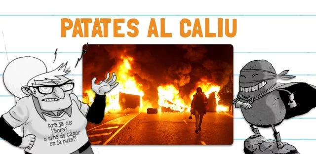
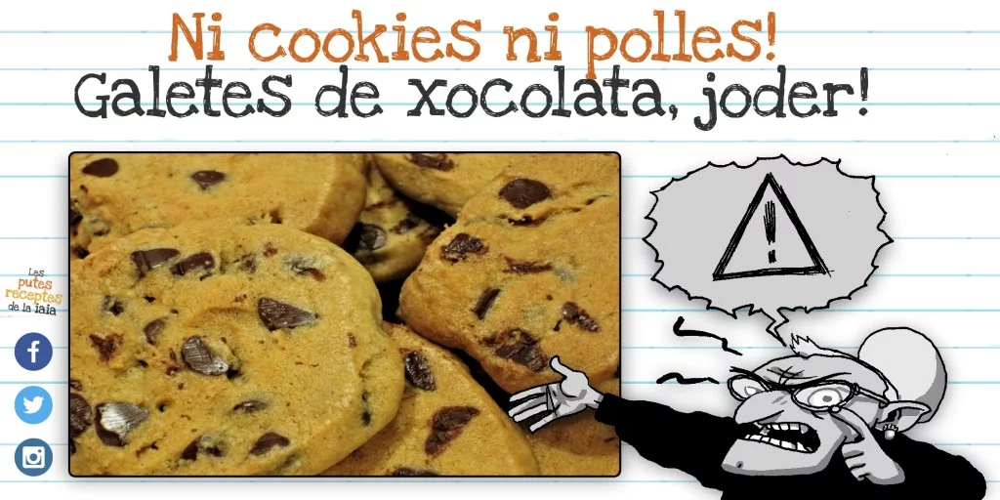
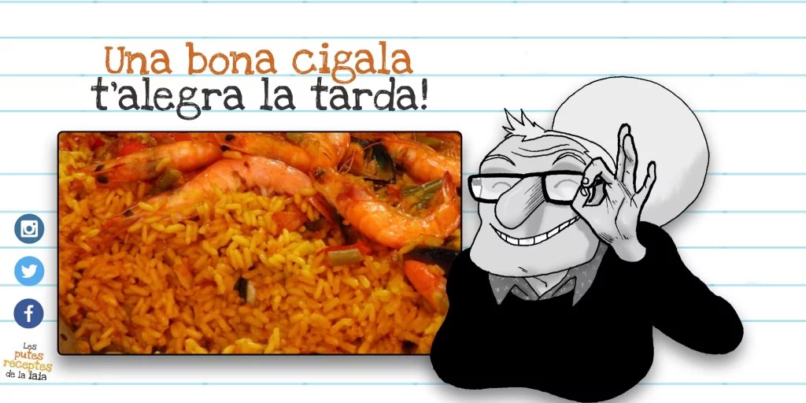
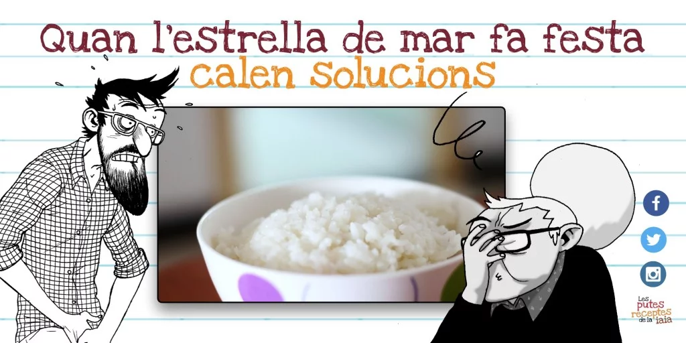

Fotre patates al caliu una tarda d’octubre
15 octubre, 2019
A vegades passa que arriba la tardor i, com que comença a fotre mal temps, et ve aquell puto ANTOJU de donar cosa calentona al body.

Eh foca, estaràs content: galetes de xocolata!
12 maig, 2019
Ara hi ha quatre desgraciats que de les galetes amb xocolata en diuen cukis, o cokies o no sé com polles. BAH, TOTS GILIPOLLES.

Cardem un arròs amb gambes
31 març, 2018
L’Indiana Jones es va passar la vida buscant el Sant Grial, quan l’arròs amb gambes és molt més de puta mare

Arròs de quan et vas cagant pels puestos
21 juliol, 2020
A vegades és el temps, a vegades són els virus… Són moltes les causes de les caguetes.